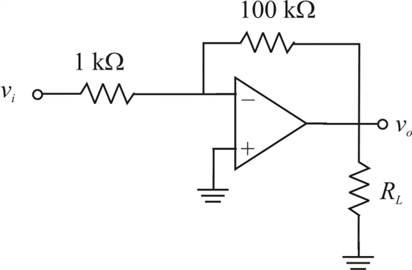

The closed loop gain of the inverting amplifier is,
The output voltage saturates at
The output current is limited to
(a)
Consider the load resistance,
Calculate the input peak voltage.
Substitute for  and
and  for
for  .
.
Consider the operational amplifier connected in the inverting configuration:

The closed loop gain of the inverting amplifier is,
The output voltage saturates at
The output current is limited to
(a)
Consider the load resistance,
Calculate the input peak voltage.
Substitute for and for .
When output is at its peak, calculate the load current using the Ohm’s law.
Substitute  for
for  and
and  for
for  .
.
Calculate the current through the feedback resistor.
Substitute  for
for  and
and  for
for  .
.
Calculate the total output current by adding the load current and feedback current.
The output current, , less than limited output current of 20 mA.
Thus, the maximum possible input peak voltage is .
(b)
Consider the load resistance,  .
.
When output is at its peak, calculate the load current using the Ohm’s law.
This load current exceeds the limit of .

Substitute for  ,
,  for
for  and for .
and for .
Thus, the maximum output voltage,  is .
is .
Calculate the input peak voltage using the following formula:
Thus, the maximum possible input peak voltage, is .
(c)
The maximum peak value of the output voltage is, .
The maximum output current is, .
From Figure 1, write the output current equation.
Simplify further.
Thus, the minimum value of the load resistance, is .